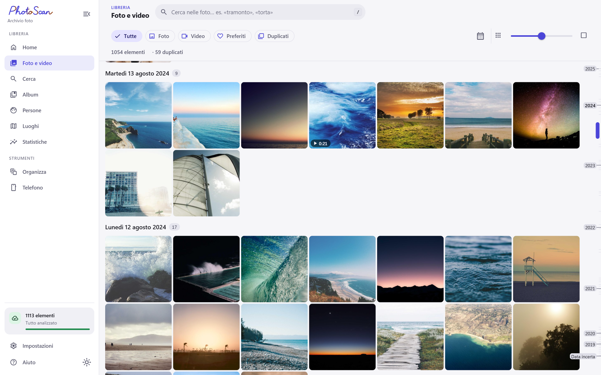

Screenshots
Some screens of the app, built on a sample library with Unsplash photos.




Bring order to years of photos and videos. PhotoScan finds duplicates, recognizes what is in each picture and proposes a folder structure by year, month and event. Everything runs on your PC: no photo is uploaded online.
Built for large archives: thousands of files scattered across folders with unhelpful names.
Creates a folder for each period and context, for example 2024/03 - Seaside holiday. You decide what to apply.
Type "sunset", "cake" or "snow" and find the right photos, even without tags or meaningful file names.
Finds exact copies and near-identical photos. You choose which one to keep: nothing is deleted for you.
Uses the GPS data in your photos to show them on a map and rediscover forgotten trips.
Groups recurring faces and lets you name them. Face recognition is off unless you turn it on.
Opens in its own window from the desktop icon. Light or dark theme, also usable on a phone screen.
Some screens of the app, built on a sample library with Unsplash photos.

Four steps, always in order. You can stop and resume whenever you like.
The basic rule: PhotoScan never deletes anything.
_Duplicati), never deleted.You need Python 3.13 and, recommended, an NVIDIA graphics card. Without NVIDIA it still works, just more slowly.
cd PhotoScan # folder extracted from the download
python -m venv .venv
.\.venv\Scripts\activate
pip install torch torchvision --index-url https://download.pytorch.org/whl/cu126 # NVIDIA GPU
pip install -r requirements.txt
winget install Gyan.FFmpeg # optional, for videosOn first use, the recognition model is downloaded (about 400 MB, one time only).
Then start PhotoScan with .\.venv\Scripts\pythonw.exe -m fotoscan.desktop or from the desktop icon.
No. Analysis, search and organization happen on your computer. The only connection is the check for new versions, which you can turn off.
No. Originals are read-only and duplicates are moved, not deleted. You decide what to keep.
Beyond the program and the recognition model, the catalog and cache grow with the number of files. The project is designed for archives of about 200 GB and 14,000 files.
Yes. Closing the app stops it, and when you reopen it, it resumes from the files not yet processed.
JPEG, PNG, HEIC (support included) and videos. Videos require FFmpeg. HEIC and TIFF files are shown in the browser as JPEG versions generated by the program.
New versions are listed in the GitHub Releases and in the app's Settings. The update is installed when you reopen the app, with a backup copy kept.
No. It is off by default and can be turned on in Settings.
| System | Windows 10 or 11 |
|---|---|
| Python | 3.13 |
| Graphics card | NVIDIA recommended. Also works CPU-only, more slowly. |
| Browser | Microsoft Edge (already on Windows) or Google Chrome |
| Disk space | A few GB for the program and model, plus space for the catalog |